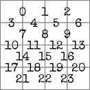

モジュール詳細：アルゴリズム
レストランのランチョンマット工場で事故があったようだ。
- モジュール上部のスクリーンは、10個の2桁の数字を順番に表示する。このシーケンスはモジュールのシード値であり、青色の数字から始まる。
- モジュールは4×4の迷路を生成し、各セルはモジュール上の対応する位置にある電球で表される。
- 電球のうち2つが点灯する。白い電球は現在地、色のついた電球はゴールを表す。迷路の壁を通らずにゴールまで進むには、グリッドの両側にあるバーを使用する。
迷路の壁の特定
- このモジュールは、あるアルゴリズムを使って迷路を生成する。使用されるアルゴリズムは、白以外の電球の色によって決定される。
- 迷路を生成する際、アルゴリズムでは多くの箇所で乱数を使用する必要がある。
- シードの最初の数字に「ポインタ」を置く。
- すべてのアルゴリズムが乱数を要求する際、ある数字nが用意される。ポインタ上の数字をnで割った余りを求め、計算に使用する数値を求める。
- 次に、ポインタをシードの次の数字に移動させる。
忘れてはならない大切なこと
- 4×4グリッドを囲む外壁は以下のアルゴリズムでは「壁」に分類されない。それでもモジュールを貫通することはできない。
- すべてのカウントはゼロ・インデックスであり、シーケンスの最初の要素は0番目、2番目の要素は1番目、3番目の要素は2番目と続く。
- 特に断りのない限り、すべての壁は通行不可能な状態から始まる。
赤い電球：クラスカルのアルゴリズム
- 16個の独立した「グループ」から始める。各グループは迷路の各セルを表す。
- L をモジュール上にあるすべての壁を右図の順番で並べたリストとする。
- 乱数をn = Lにある壁の個数を使用して生成する。(乱数)番目の要素をLから取得する。
- この位置にある壁をリストから削除し、この壁を通過可能にして、繋がった2つのグループを1つに統合する。
- Lから、自身とグループを結ぶ壁を取り除く。
- モジュール上のグループが1つになるまで、ステップ3-5を繰り返す。